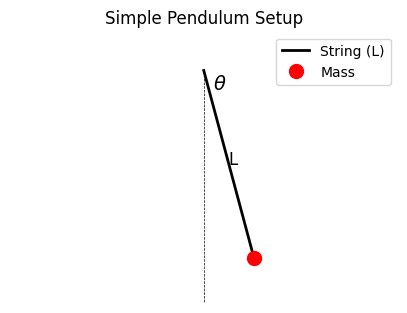
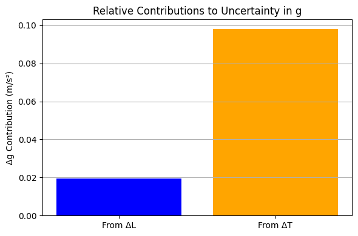

Problem 1
Measuring Earth's Gravitational Acceleration with a Pendulum
Motivation
The acceleration due to gravity \( g \) is a fundamental constant of nature, affecting a wide range of physical phenomena, from falling objects to satellite orbits. Determining \( g \) experimentally allows us to connect theoretical physics to measurable reality.
One of the most elegant and classical ways to measure \( g \) is with a simple pendulum, where the period of oscillation is directly related to the local gravitational field strength.
Task
Use a simple pendulum to estimate the gravitational acceleration \( g \). Carefully measure time, length, and calculate uncertainties. Analyze the precision of your estimate and reflect on sources of error.
Materials
- A string (approximately 1–1.5 meters in length)
- A small mass (e.g., keychain, metal weight, bag of sugar)
- A stopwatch (or a smartphone timer)
- A ruler or measuring tape
Procedure
1. Setup
- Attach the string to a fixed support and tie the mass to the other end.
- Measure the length \( L \) from the suspension point to the center of the mass.
- Record the ruler resolution, then calculate the uncertainty in length as:

2. Data Collection
- Displace the pendulum by a small angle (less than \(15^\circ\)) and release.
- Measure the time for 10 complete oscillations (denoted \( T_{10} \)).
- Repeat this process 10 times, and record all measurements.
- Calculate the mean time \( \overline{T}_{10} \) and the standard deviation \( \sigma_T \).
- Estimate the uncertainty in the mean using:
$$
\Delta T_{10} = \frac{\sigma_T}{\sqrt{n}} \quad \text{where } n = 10
$$

Calculations
1. Calculate the Period
The period \( T \) of one oscillation is:
And its uncertainty:
2. Calculate Gravitational Acceleration
The formula for gravitational acceleration using a pendulum is:
3. Propagate Uncertainties
The uncertainty in \( g \) is calculated using propagation of uncertainty:

Example Table (Fill with Your Data)
| Trial | \( T_{10} \) (s) |
|---|---|
| 1 | |
| 2 | |
| ... | |
| 10 |
- Mean \( \overline{T}_{10} \) = ...
- Standard deviation \( \sigma_T \) = ...
- \( T = \overline{T}_{10} / 10 \) = ...
- \( L = \) ... m ± \( \Delta L = \) ... m
- \( g = \) ... m/s² ± \( \Delta g = \) ...
Analysis
1. Comparison
Compare your measured value of \( g \) with the standard value:
2. Discussion
- How does length resolution (i.e., \( \Delta L \)) affect the uncertainty in \( g \)?
- How does timing variability (i.e., \( \Delta T \)) contribute to your final result?
- What sources of systematic or random error could influence your measurements?
Deliverables
- Table of all \( T_{10} \) trials, length \( L \), and uncertainties
- Calculated values: \( \overline{T}_{10} \), \( T \), \( g \), \( \Delta g \)
- Discussion on uncertainties and comparison to the expected value
Additional Notes
- Small angles (< \(15^\circ\)) are important to ensure the pendulum behaves like a simple harmonic oscillator.
- Repeating measurements reduces random error.
- The accuracy of your stopwatch and human reaction time are key contributors to the total uncertainty.
Interactive Simulations
Explore pendulum physics with these interactive tools:
- PhET – Pendulum Lab
- MyPhysicsLab – Pendulum Simulation
- GeoGebra – Simple Pendulum
- Desmos – Pendulum Curve
These simulations let you experiment with pendulum length, gravity, damping, and observe how these affect the period and motion.